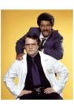

What is this site?
Stephen's Profile
Browser Extension
Stephen Klancher
Recent
Overall
Year Overview
Series
Lists
Man to Man with Dean Learner
List contains: 6 items, 0.1 hours.
Seasons:
1
|
Title Search (4+ characters):
Group:
None
Example Group: Me and Stephen
Who's seen it:
No filter
Everyone
No One
Anyone
Anyone Has Not
Who's commented:
No filter
Everyone
No One
Anyone
Anyone Has Not
Netflix:
No Filter
Available for Instant Watch
Netflix Link Known
Netflix Link Unknown
Missing Data:
No Filter
Runtime
Season
Release Year (YYYY) or Decade (YYYx):
Sort:
Normal
Newest Episodes First
Episodes in Order
Recently Watched First
Watched in Order
Newest Releases First
Releases in Order
Stephen Klancher
...has seen 6
...has seen 0.1 hours
Timeline
Most Recent:
Randolph Caer

Season 1
Garth Marenghi (2006)
Airs on 2006-10-20
S1 - E1 of
Man to Man with Dean Learner
Stephen Klancher
:
August 15, 2011
Steve Pising (2006)
Airs on 2006-10-27
S1 - E2 of
Man to Man with Dean Learner
Stephen Klancher
:
August 18, 2011
Glynn Nimron (2006)
Airs on 2006-11-03
S1 - E3 of
Man to Man with Dean Learner
Stephen Klancher
:
August 18, 2011
Merriman Weir (2006)
Airs on 2006-11-10
S1 - E4 of
Man to Man with Dean Learner
Stephen Klancher
:
August 18, 2011
Amir Chanan (2006)
Airs on 2006-11-17
S1 - E5 of
Man to Man with Dean Learner
Stephen Klancher
:
August 18, 2011
Randolph Caer (2006)
Airs on 2006-11-24
S1 - E6 of
Man to Man with Dean Learner
Stephen Klancher
:
August 18, 2011
Watched an episode not known by IMDb?
Season:
-
Episode:
Date:
Comment: